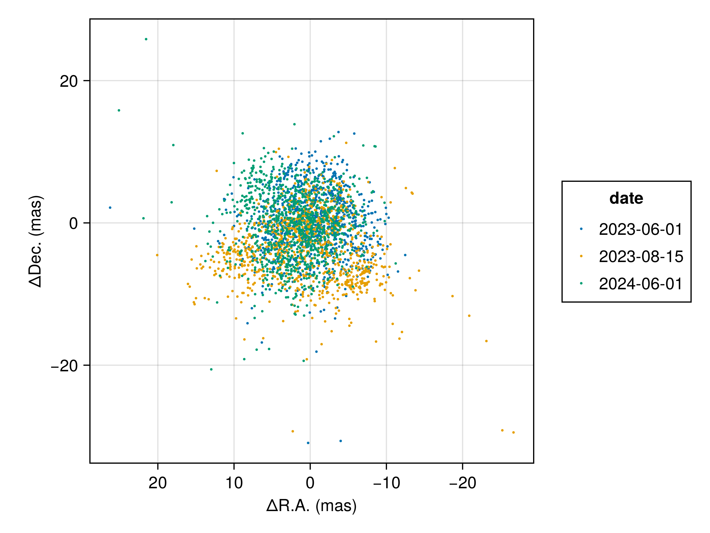
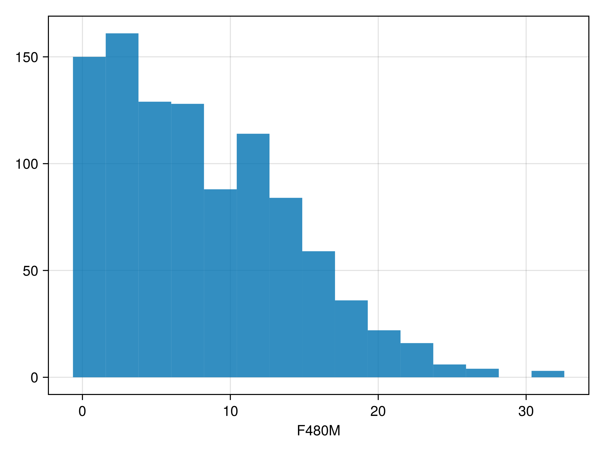
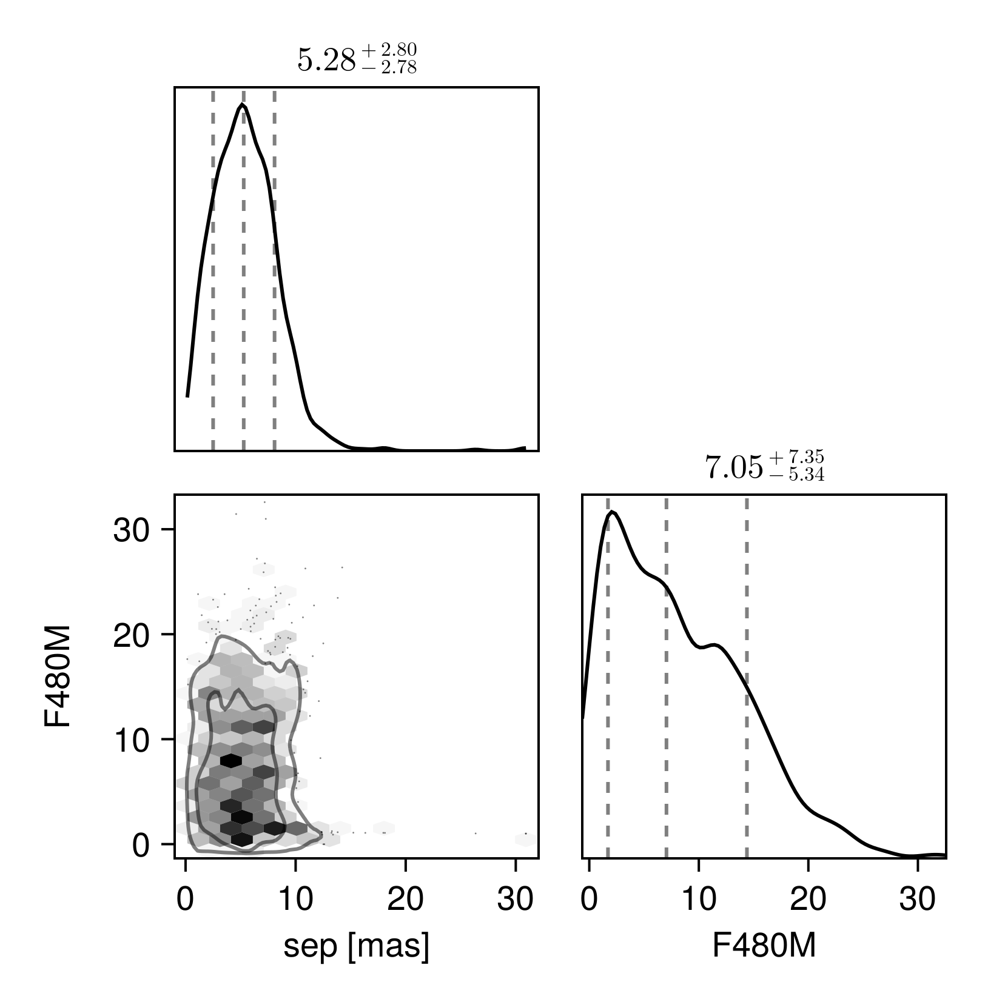

Fitting Interferometric Observables
In this tutorial, we fit a planet & orbit model to a sequence of interferometric observations. Closure phases and squared visibilities are supported.
We load the observations in OI-FITS format and model them as a point source orbiting a star.
Interferometer modelling is supported in Octofitter via the extension package OctofitterInterferometry. To install it, run pkg> add http://github.com/sefffal/Octofitter.jl:OctofitterInterferometry
using Octofitter
using OctofitterInterferometry
using Distributions
using CairoMakie
using PairPlots┌ Warning: Module Octofitter with build ID ffffffff-ffff-ffff-0000-008219965d0c is missing from the cache.
│ This may mean Octofitter [daf3887e-d01a-44a1-9d7e-98f15c5d69c9] does not support precompilation but is imported by a module that does.
└ @ Base loading.jl:1942Download simulated JWST AMI observations from our examples folder on GitHub:
download("https://github.com/sefffal/Octofitter.jl/raw/main/examples/AMI_data/Sim_data_2023_1_.oifits", "Sim_data_2023_1_.oifits")
download("https://github.com/sefffal/Octofitter.jl/raw/main/examples/AMI_data/Sim_data_2023_2_.oifits", "Sim_data_2023_2_.oifits")
download("https://github.com/sefffal/Octofitter.jl/raw/main/examples/AMI_data/Sim_data_2024_1_.oifits", "Sim_data_2024_1_.oifits")"Sim_data_2024_1_.oifits"Create the likelihood object:
vis_like = InterferometryLikelihood(
(; filename="Sim_data_2023_1_.oifits", epoch=mjd("2023-06-01"), band=:F480M, use_vis2=false),
(; filename="Sim_data_2023_2_.oifits", epoch=mjd("2023-08-15"), band=:F480M, use_vis2=false),
(; filename="Sim_data_2024_1_.oifits", epoch=mjd("2024-06-01"), band=:F480M, use_vis2=false),
)OctofitterInterferometry.InterferometryLikelihood Table with 12 columns and 3 rows:
epoch band use_vis2 u v ⋯
┌────────────────────────────────────────────────────────────────────────
1 │ 60096.0 F480M false [-3.46641e5, 6.7596… [-8.4391e5, -1.3675… ⋯
2 │ 60171.0 F480M false [-3.46641e5, 6.7596… [-8.4391e5, -1.3675… ⋯
3 │ 60462.0 F480M false [-3.46641e5, 6.7596… [-8.4391e5, -1.3675… ⋯@planet b Visual{KepOrbit} begin
a ~ Uniform(0, 100)
e ~ Uniform(0.0, 0.5)
i ~ Sine()
ω ~ UniformCircular()
Ω ~ UniformCircular()
# Our prior on the planet's photometry
F480M ~ Normal(0., 10)
τ ~ UniformCircular(1.0)
P = √(b.a^3/system.M)
tp = b.τ*b.P*365.25 + 58849 # reference epoch for τ. Choose an MJD date near your data.
end
@system Tutoria begin
M ~ truncated(Normal(1.0, 1), lower=0)
plx ~ truncated(Normal(100., 50), lower=0)
end vis_like bSystem model Tutoria
Derived:
Priors:
M Truncated(Distributions.Normal{Float64}(μ=1.0, σ=1.0); lower=0.0)
plx Truncated(Distributions.Normal{Float64}(μ=100.0, σ=50.0); lower=0.0)
Planet b
Derived:
ω, Ω, τ, P, tp,
Priors:
a Distributions.Uniform{Float64}(a=0.0, b=100.0)
e Distributions.Uniform{Float64}(a=0.0, b=0.5)
i Sine()
ωy Distributions.Normal{Float64}(μ=0.0, σ=1.0)
ωx Distributions.Normal{Float64}(μ=0.0, σ=1.0)
Ωy Distributions.Normal{Float64}(μ=0.0, σ=1.0)
Ωx Distributions.Normal{Float64}(μ=0.0, σ=1.0)
F480M Distributions.Normal{Float64}(μ=0.0, σ=10.0)
τy Distributions.Normal{Float64}(μ=0.0, σ=1.0)
τx Distributions.Normal{Float64}(μ=0.0, σ=1.0)
Octofitter.UnitLengthPrior{:ωy, :ωx}: √(ωy^2+ωx^2) ~ LogNormal(log(1), 0.02)
Octofitter.UnitLengthPrior{:Ωy, :Ωx}: √(Ωy^2+Ωx^2) ~ LogNormal(log(1), 0.02)
Octofitter.UnitLengthPrior{:τy, :τx}: √(τy^2+τx^2) ~ LogNormal(log(1), 0.02)
OctofitterInterferometry.InterferometryLikelihood Table with 12 columns and 3 rows:
epoch band use_vis2 u v ⋯
┌────────────────────────────────────────────────────────────────────────
1 │ 60096.0 F480M false [-3.46641e5, 6.7596… [-8.4391e5, -1.3675… ⋯
2 │ 60171.0 F480M false [-3.46641e5, 6.7596… [-8.4391e5, -1.3675… ⋯
3 │ 60462.0 F480M false [-3.46641e5, 6.7596… [-8.4391e5, -1.3675… ⋯
Create the model object and run octofit:
model = Octofitter.LogDensityModel(Tutoria)
results = octofit(model)Chains MCMC chain (1000×30×1 Array{Float64, 3}):
Iterations = 1:1:1000
Number of chains = 1
Samples per chain = 1000
Wall duration = 290.02 seconds
Compute duration = 290.02 seconds
parameters = M, plx, b_a, b_e, b_i, b_ωy, b_ωx, b_Ωy, b_Ωx, b_F480M, b_τy, b_τx, b_ω, b_Ω, b_τ, b_P, b_tp
internals = n_steps, is_accept, acceptance_rate, hamiltonian_energy, hamiltonian_energy_error, max_hamiltonian_energy_error, tree_depth, numerical_error, step_size, nom_step_size, is_adapt, loglike, logpost, tree_depth, numerical_error
Summary Statistics
parameters mean std mcse ess_bulk ess_tail rhat ⋯
Symbol Float64 Float64 Float64 Float64 Float64 Float64 ⋯
M 1.1513 0.7486 0.0752 76.2233 62.6089 1.0012 ⋯
plx 56.6397 36.7304 15.8028 4.9077 42.9671 1.3014 ⋯
b_a 0.2684 0.3152 0.1330 4.0170 22.1551 1.4043 ⋯
b_e 0.2112 0.1379 0.0178 68.7302 100.7309 1.0353 ⋯
b_i 1.5217 0.6762 0.1005 45.2395 78.7613 1.0155 ⋯
b_ωy 0.0651 0.7112 0.1323 33.2067 311.2981 1.0026 ⋯
b_ωx 0.0796 0.6979 0.1431 22.0432 197.7456 1.1149 ⋯
b_Ωy -0.1634 0.6793 0.1104 48.6587 236.2416 1.0237 ⋯
b_Ωx 0.2681 0.6640 0.1003 56.6837 273.6048 1.0138 ⋯
b_F480M 8.1116 6.0912 0.7426 61.1518 119.2667 1.0061 ⋯
b_τy -0.2629 0.6565 0.1527 30.9535 58.9338 1.0712 ⋯
b_τx -0.0709 0.7044 0.1287 37.0085 284.2492 1.0018 ⋯
b_ω 0.2183 1.7362 0.2358 66.2178 244.1060 1.0363 ⋯
b_Ω 0.5730 1.8832 0.2733 55.8107 328.4247 1.0317 ⋯
b_τ -0.0021 0.3312 0.0491 85.5174 369.3769 1.0757 ⋯
b_P 0.1807 0.3276 0.1173 3.8111 21.1977 1.5336 ⋯
b_tp 58843.7757 50.3653 4.7496 64.8909 33.7193 1.1787 ⋯
1 column omitted
Quantiles
parameters 2.5% 25.0% 50.0% 75.0% 97.5%
Symbol Float64 Float64 Float64 Float64 Float64
M 0.0343 0.5615 1.0440 1.6340 2.7580
plx 3.1386 26.0928 49.1890 84.3535 131.5351
b_a 0.0383 0.0909 0.1489 0.3631 1.3106
b_e 0.0080 0.0873 0.1994 0.3204 0.4731
b_i 0.2175 1.0263 1.5739 2.0118 2.6715
b_ωy -0.9989 -0.6725 0.1508 0.7742 1.0020
b_ωx -0.9961 -0.5477 0.1288 0.7548 1.0094
b_Ωy -0.9989 -0.7731 -0.3646 0.5111 0.9754
b_Ωx -0.9839 -0.2749 0.5252 0.8465 1.0004
b_F480M 0.1219 2.8631 7.0451 12.0636 21.8186
b_τy -1.0046 -0.8692 -0.4441 0.2840 0.9846
b_τx -1.0062 -0.7820 -0.1297 0.5524 0.9937
b_ω -2.9490 -1.0862 0.3135 1.6451 2.9759
b_Ω -2.9978 -1.0234 1.0388 2.1500 2.9739
b_τ -0.4753 -0.3110 -0.0479 0.3310 0.4890
b_P 0.0082 0.0345 0.0663 0.2518 1.2242
b_tp 58749.6667 58841.6689 58847.9541 58854.2661 58904.1392
Plot the resulting orbit:
using Plots: Plots
plotchains(results,:b, kind=:astrometry)
Plot position at each epoch:
using PlanetOrbits
els = Octofitter.construct_elements(results,:b,:);
fig = Figure()
ax = Axis(
fig[1,1],
aspect=1,
xreversed=true,
xlabel="ΔR.A. (mas)",
ylabel="ΔDec. (mas)",
)
for epoch in vis_like.table.epoch
scatter!(
ax,
raoff.(els, epoch)[:],
decoff.(els, epoch)[:],
label=string(mjd2date(epoch)),
markersize=3,
)
end
Legend(fig[1,2], ax, "date")
fig
Examine the recovered photometry posterior:
hist(results[:b_F480M][:], axis=(;xlabel="F480M"))
And create a corner plot examining contrast vs. separation at the epoch of the first observation:
pairplot(
(;
sep=projectedseparation.(els, vis_like.table.epoch[1]),
F480M=results["b_F480M"][:]
),
labels=Dict(:sep=>"sep [mas]")
)